2.3. Simulation Controls settings
2.4. Load materials into Material list
On a Windows machine, go to the  button, select DEFORM-v1x.xxx (.xxx indicates version number E.g. v14.0.2) and select
DEFORM GUI Main v1x.x from the DEFORM-v1x.xxx menu. The DEFORM GUI Main window will appear.
button, select DEFORM-v1x.xxx (.xxx indicates version number E.g. v14.0.2) and select
DEFORM GUI Main v1x.x from the DEFORM-v1x.xxx menu. The DEFORM GUI Main window will appear.
New Problem dialog.
Create a new problem either by selecting File  New Problem or by clicking the New Problem
New Problem or by clicking the New Problem  icon. The New Problem Setup window will appear. Select "Integrated Manufacturing Process" radio button and unit system as "SI" radio button in Unit field as shown in Fig. 3DINDL2.1. Define problem Name as “3D_Induction_Heating_Combined" and make sure the “Show option dialog” check box is turned on (if we do not turn on the “Show option dialog” check box, then we will not get the New Project
dialog in MO UI). Then click on
icon. The New Problem Setup window will appear. Select "Integrated Manufacturing Process" radio button and unit system as "SI" radio button in Unit field as shown in Fig. 3DINDL2.1. Define problem Name as “3D_Induction_Heating_Combined" and make sure the “Show option dialog” check box is turned on (if we do not turn on the “Show option dialog” check box, then we will not get the New Project
dialog in MO UI). Then click on  button to open a new Problem using the Deform Integrated Manufacturing Process.
button to open a new Problem using the Deform Integrated Manufacturing Process.
Multiple operation wizard will open with the New Project dialog, at this point user will be prompted to specify a project name (system will create a separate folder with this project name) and title for this session. In this session we will
use “3D_Induction_Heating_Combined" as the project name. Click on  to continue to open the operation (see Fig. 3DINDL2.2 ).
to continue to open the operation (see Fig. 3DINDL2.2 ).
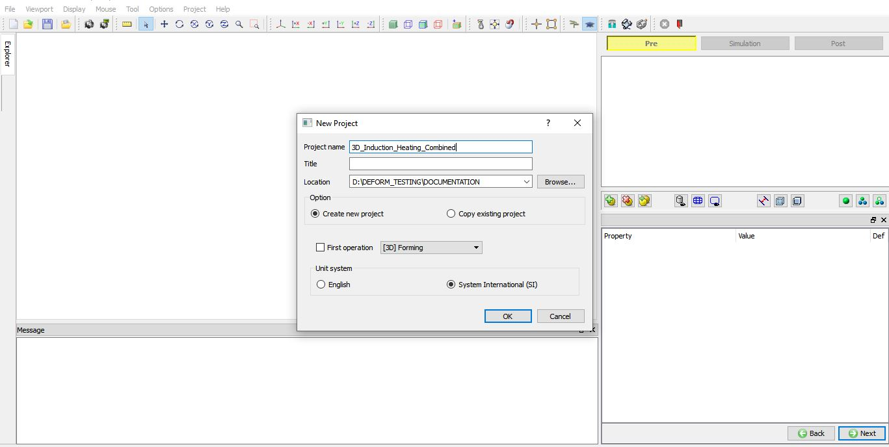
MO Wizard New Project Opening Window.
Multiple Operation wizard will open. add 3D Forming operation from Operations list of Explorer by clicking  button as shown in Fig. 3DINDL2.3.
button as shown in Fig. 3DINDL2.3.
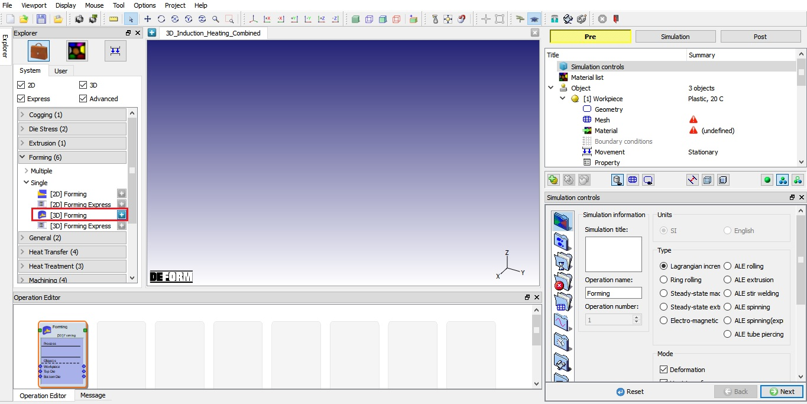
Adding 3D Forming operation into Operation Editor.
We will be using BEM type Induction heating in this lab hence, we will select Induction (BEM) in the Simulation controls page. To do so, in Simulation controls uncheck the Deformation check box and check the Heating check box and select Induction (BEM) from pull down below it as shown in Fig. 3DINDL2.4. Click  to Material list page.
to Material list page.
Simulation controls settings.
In Material list page, load the material from file AL 1100 COLD [70F(20C)].key available under /3D/LABS/Induction_Heating/Combined. Similarly, load the material from file coil.key. This can be done by clicking  button as shown in Fig. 3DINDL2.5. Click
button as shown in Fig. 3DINDL2.5. Click  to objects page.
to objects page.
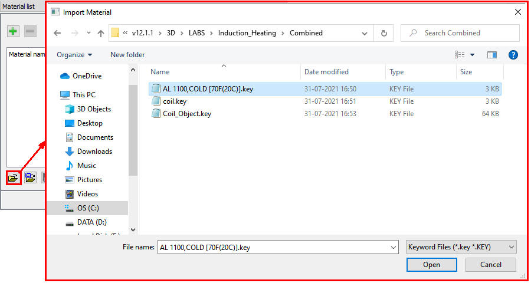
Loading material into Material list
In Object page, we can observe 3 objects being added by default. For this lab, we will require only two objects for this lab hence, keep Workpiece and Top Die and delete the Bottom Die object (See Fig. 3DINDL2.6.).
Click  to Workpiece page.
to Workpiece page.
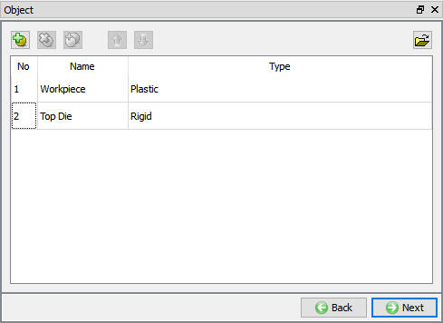
Adding required objects.
Keep object name as “Workpiece”, Temperature as 20°C and object type as “Plastic” as shown in Fig. 3DINDL2.7. Click  to Geometry page.
to Geometry page.
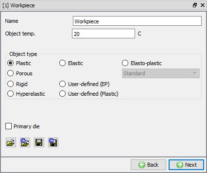
Workpiece object page.
In Geometry page, click on  link and create cylinder geometry with Diameter(2R) 200mm and Height (H) 300mm as
shown in the Fig. 3DINDL2.8. Click
link and create cylinder geometry with Diameter(2R) 200mm and Height (H) 300mm as
shown in the Fig. 3DINDL2.8. Click  button to close Geometry
Primitive page.
button to close Geometry
Primitive page.
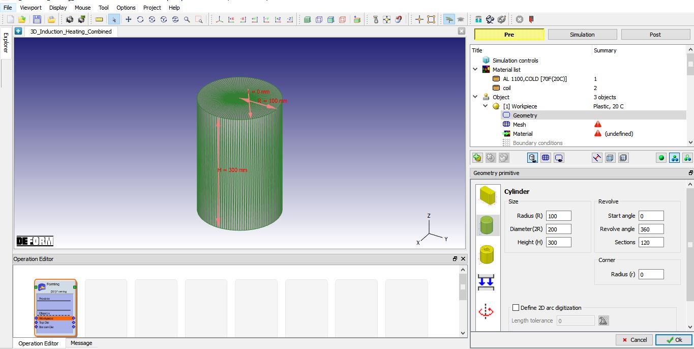
Defining Workpiece Geometry.
Brick mesh settings in Geometry page:
We will be generating brick mesh for Workpiece. To generate the brick mesh, click on the  link in the geometry page. Select the "Revolve"
radio button and select revolve type as “Full Revolve”, accept the default revolve angle as shown in Fig. 3DINDL2.9. Click
the
link in the geometry page. Select the "Revolve"
radio button and select revolve type as “Full Revolve”, accept the default revolve angle as shown in Fig. 3DINDL2.9. Click
the  button to exit the brick mesh geometry setup.
button to exit the brick mesh geometry setup.
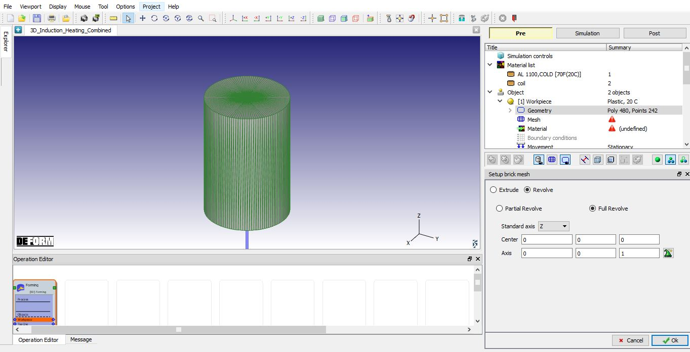
Defining brick mesh settings in geometry page.
Switch to expert mode using  to define brick mesh settings. From General tab of Mesh page,, select the "Brick Mesh" radio button and
the "Uniform thickness" radio button, set the "# of layers" to 60 as shown in Fig. 3DINDL2.10.
In the "2D Cross Section" tab, set the Targe number of elements as 200, Thickness elements as 4 and the Size ratio as 1. Click on
to define brick mesh settings. From General tab of Mesh page,, select the "Brick Mesh" radio button and
the "Uniform thickness" radio button, set the "# of layers" to 60 as shown in Fig. 3DINDL2.10.
In the "2D Cross Section" tab, set the Targe number of elements as 200, Thickness elements as 4 and the Size ratio as 1. Click on  button and click
button and click  in Default
Boundary conditions popup to assign default BCC. Click
in Default
Boundary conditions popup to assign default BCC. Click  to assign material.
to assign material.
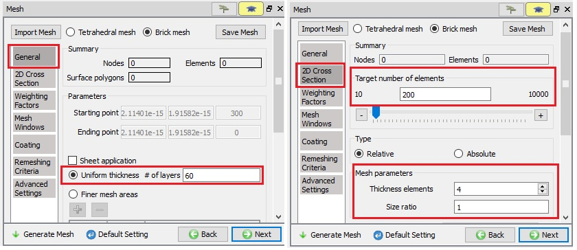
Brick mesh settings in mesh page for Workpiece.
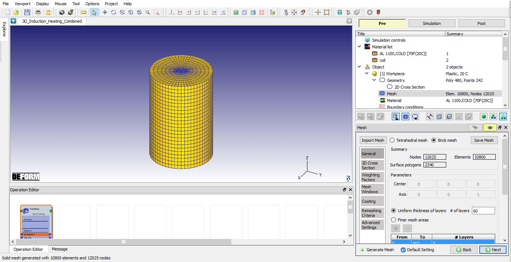
2D Cross-section mesh settings for Workpiece and mesh generated.
Click on the AL 1100 COLD[70F(20C)] in the material window to assign the material to the Workpiece as shown in Fig. 3DINDL2.12. Click  to Boundary conditions page.
to Boundary conditions page.
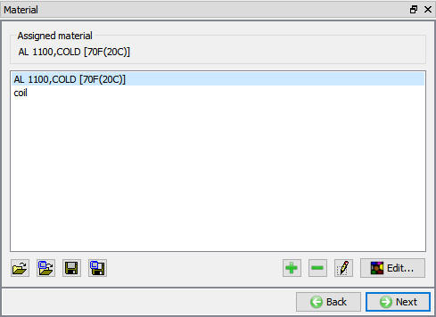
Assigning material to Workpiece.
In Boundary conditions page, check whether the Heat exchange with environment Boundary condition has been assigned to the workpiece surface by default during mesh generation. If it is not applied, then add Heat exchange with environment BCC to the entire outer surface of the object.
Click on the Induction BEM – Heating Surface, click on  so that all surfaces are selected and then assign BCC by clicking on
so that all surfaces are selected and then assign BCC by clicking on  . Added Induction BEM - Heating surface is as shown in Fig. 3DINDL2.13. Click
. Added Induction BEM - Heating surface is as shown in Fig. 3DINDL2.13. Click  until Top Die object page
until Top Die object page
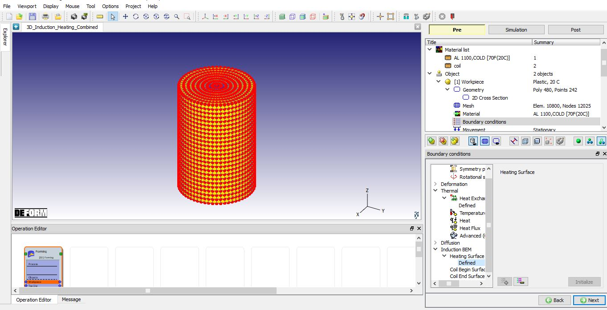
Assigning Induction BEM BCC.
In Top Die page, change the Object name to Coil. Using  option, import Coil_Object.key from /3D/LABS/Induction_Heating/Combined folder. The imported
Coil.key is having Coil geometry along with mesh data as shown in Fig. 3DINDL2.14. Since we don’t need to generate geometry
and mesh, we will navigate using
option, import Coil_Object.key from /3D/LABS/Induction_Heating/Combined folder. The imported
Coil.key is having Coil geometry along with mesh data as shown in Fig. 3DINDL2.14. Since we don’t need to generate geometry
and mesh, we will navigate using  until Material page.
until Material page.
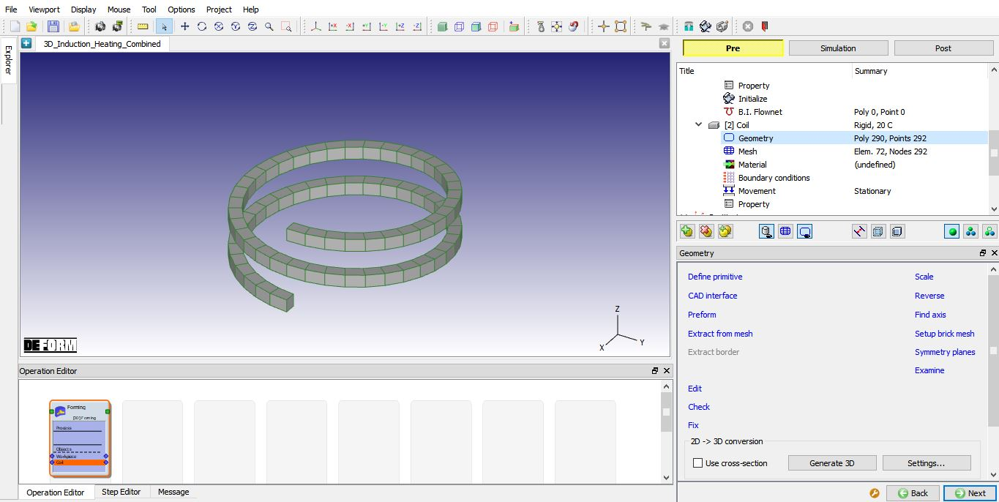
Importing Coil object data.
Click on the coil in the material window to assign the material to the Coil as shown in Fig. 3DINDL2.15. Click
 to Boundary conditions page.
to Boundary conditions page.
Assigning material to Coil.
In BCC page, select Heating Surface option under Induction BEM from BCC tree and select all surfaces of the Coil using  , then click on
, then click on  to finish the assignment (See Fig. 3DINDL2.16.).
to finish the assignment (See Fig. 3DINDL2.16.).
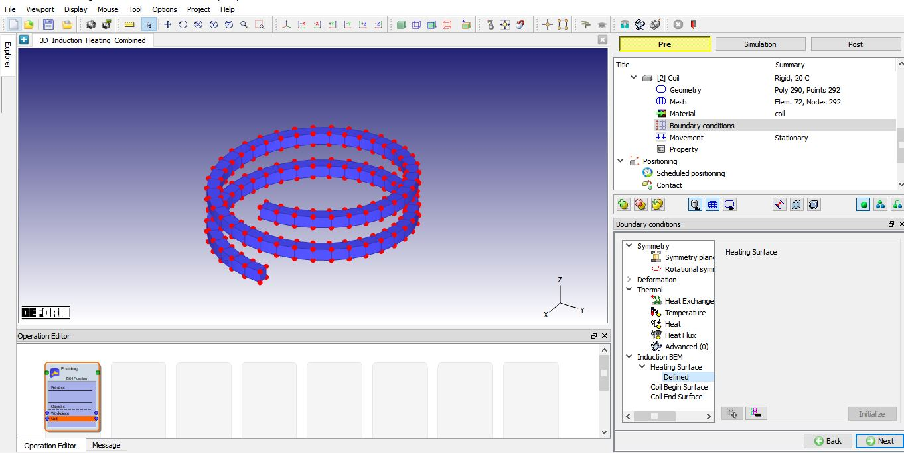
Assigning Heating Surface BCC.
Select Coil Begin Surface option under Induction BEM BCC, select Coil begin surface and assign using  as shown Fig. 3DINDL2.17.
as shown Fig. 3DINDL2.17.
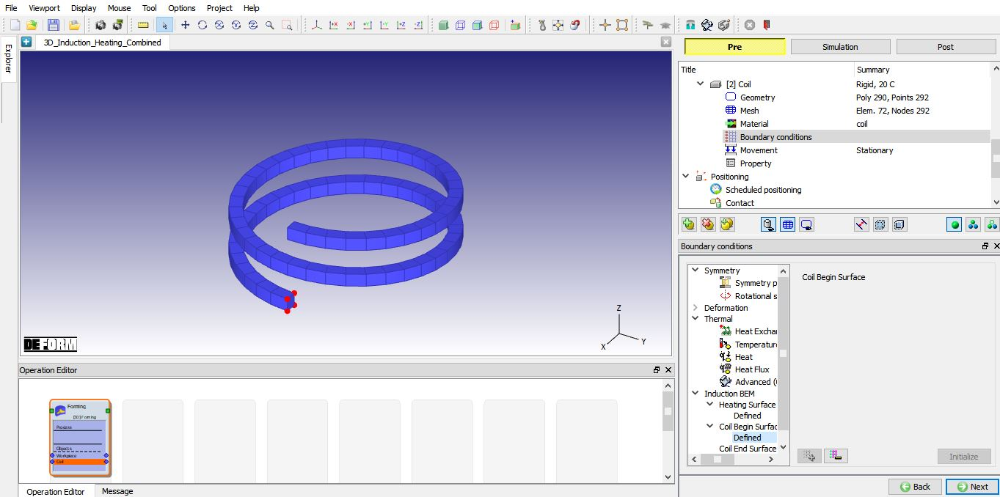
Assigning Coil Begin Surface BCC.
Similarly, select Coil End Surface option under Induction BEM BCC, select Coil End surface and assign using  as shown in Fig. 3DINDL2.18. Click
as shown in Fig. 3DINDL2.18. Click  until Properties page.
until Properties page.
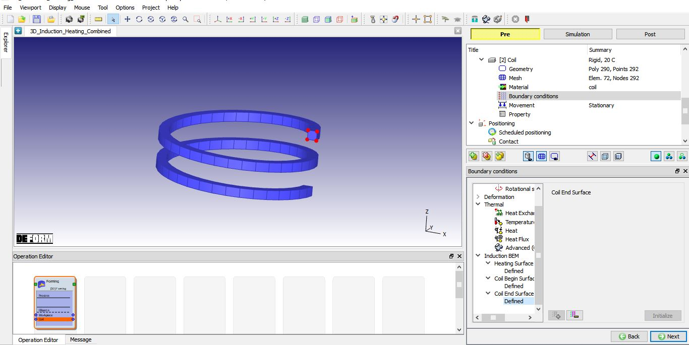
Assigning Coil End Surface BCC.
Select "Heating" tab in object “Properties” page, select Dual radio button from Current frequency type. Select “Combined” radio button as Dual frequency
type and define frequency information as, f1=1000, f2=10000, w1=1 and w2=0.1 under Dual frequency as shown in Fig. 3DINDL2.19. Select Volume charge type as Current density and define constant value 65 under “Data Definition” tab as shown in Fig. 3DINDL2.19. Click  until Step page.
until Step page.
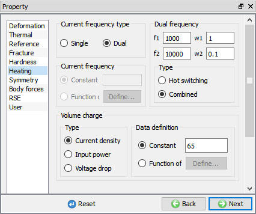
Defining Coil properties
In Step controls page, define Number of Simulation steps as 40 and Step Increment to save as 1. Select Time as Solution step definition type and define constant 0.1 sec/step
as step definition as shown in Fig. 3DINDL2.20. Click on  button to navigate to Generate database page.
button to navigate to Generate database page.
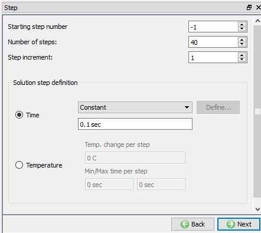
Defining step controls for simulation.
In Generate database page, click the  button to have the program check to see if anything was missed in the problem setup. During the checking process, messages in the red color
signify data that needs to be fixed before a simulation can be run (such as when you forget to define any material data).
button to have the program check to see if anything was missed in the problem setup. During the checking process, messages in the red color
signify data that needs to be fixed before a simulation can be run (such as when you forget to define any material data).
Click on  button to generate the database.
button to generate the database.
Once the database has been generated, switch to the Simulation mode by clicking on  button above the operation tree. Click on the
button above the operation tree. Click on the  action label to open the Run Options dialog as shown in Fig. 3DINDL2.21 Use the default Continue Run option to
select “Continue from the last step” (from step -1) option and then select the Simulation mode as Interactive. Click on
action label to open the Run Options dialog as shown in Fig. 3DINDL2.21 Use the default Continue Run option to
select “Continue from the last step” (from step -1) option and then select the Simulation mode as Interactive. Click on  button to run the simulation.
button to run the simulation.
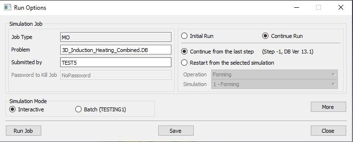
Run Simulation window.
The progress of the simulation can be monitored as it is running by looking at the Simulation Message tab and Simulation Graphics from the Graphics display region in Simulation mode. if the  option is checked in Simulation Message tab, which is the default setting, the Message file will refresh automatically.
option is checked in Simulation Message tab, which is the default setting, the Message file will refresh automatically.
The Message file provides information about which simulation step the simulation is currently on and information dealing with how well the simulation is running.
When the simulation is completed, review the results by switching to Post mode using the  button above the Simulation tool bar.
button above the Simulation tool bar.
In Step Browser, click on All button and plot Temperature state variable, observe the temperature distribution at last step which should look like as shown in Fig. 3DINDL2.22.
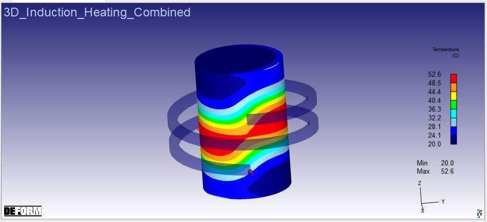
Temperature distribution at the last step